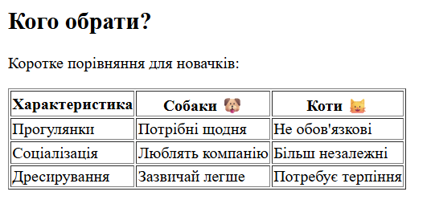
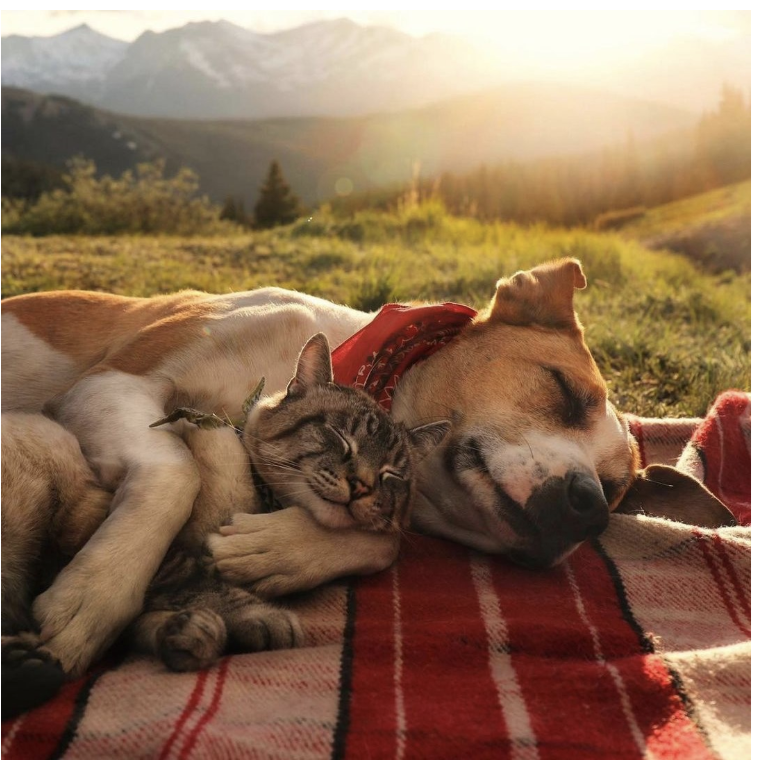
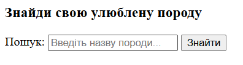

Лабораторна робота №1
1. Опис предметного середовища
Тема: Енциклопедія хвостатих друзів.
Мета: Створення зручного ресурсу для популяризації знань про домашніх тварин (собак та котів).
Бізнес-логіка: Сайт надає інформацію про породи. Користувач обирає категорію (Собаки/Коти), бачить список порід і може переглянути деталі. Реалізовано пошук та порівняльну таблицю.
2. Вимоги до застосунку
- Функціональні: Навігація, пошук, перегляд карток тварин, таблиця порівняння.
- Нефункціональні: Адаптивність, швидке завантаження, відсутність реєстрації.
3. Реалізація (Коди та Скріншоти)
HTML-код Таблиці
<table border="1">
<thead>
<tr>
<th>Характеристика</th>
<th>Собаки 🐶</th>
<th>Коти 🐱</th>
</tr>
</thead>
<tbody>
<tr>
<td>Прогулянки</td>
<td>Потрібні щодня</td>
<td>Не обов'язкові</td>
</tr>
<tr>
<td>Соціалізація</td>
<td>Люблять компанію</td>
<td>Більш незалежні</td>
</tr>
<tr>
<td>Дресирування</td>
<td>Зазвичай легше</td>
<td>Потребує терпіння</td>
</tr>
</tbody>
</table>
Результат виконання:

HTML-код Зображення
<img src="img/sobaka-i-kit.png" alt="Милі котик і песик разом" width="600">

HTML-код Форми (Пошук)
<section id="search-section">
<h3>Знайди свою улюблену породу</h3>
<form>
<label for="search">Пошук:</label>
<input type="text" id="search" name="search" placeholder="Введіть назву породи...">
<button type="button">Знайти</button>
</form>
</section>
